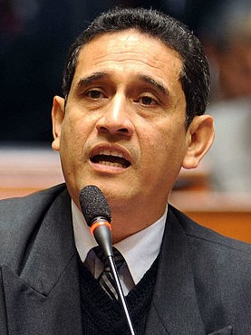
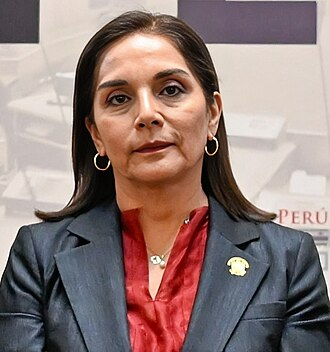
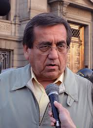
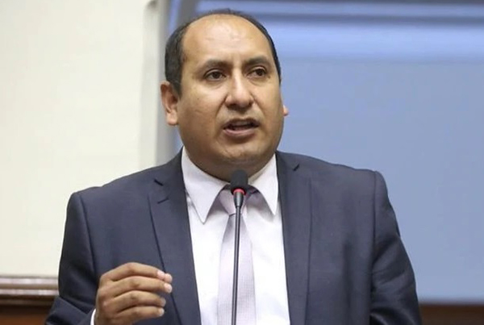

| Nombre | Partido | Foto | Dedicacion |
|---|---|---|---|
| Keiko Fujimori Higuchi | Fuerza Popular | Liderazgo Partidario / Administración | |
| Mauricio Mulder Bedoya | Partido Aprista Peruano | Legislador / Abogado | |
| Eduardo Salhuana Cavides | Alianza para el Progreso | Gestión Pública / Derecho | |
| Mesías Guevara Amasifuén | Partido Morado |  |
Descentralización e Ingeniería |
| Patricia Juárez Gallegos | Fuerza Popular |  |
Reformas Constitucionales / Abogada |
| Jorge del Castillo Gálvez | Partido Aprista Peruano |  |
Políticas de Estado / Abogado |
| Alejandro Cavero Alva | Avanza País | Reformas Liberales / Internacionalista | |
| Fernando Rospigliosi Capurro | Fuerza Popular | Seguridad Ciudadana / Analista | |
| Lady Camones Soriano | Alianza para el Progreso | Fiscalización y Control / Abogada | |
| Richard Arce Cáceres | Partido Morado |  |
Conflictos Sociales / Ingeniería |